← Back to supported mods
Parts
Apollo Command Module
Apollo LEM Ascent Module
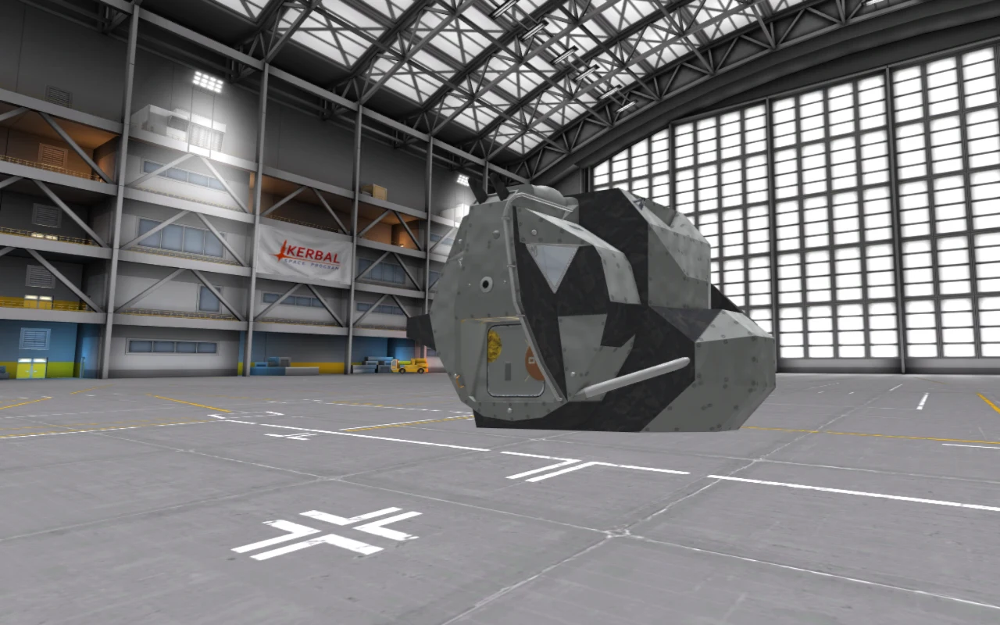

Apollo Sub-Satellite
Gemini Big "G" Crew Compartment
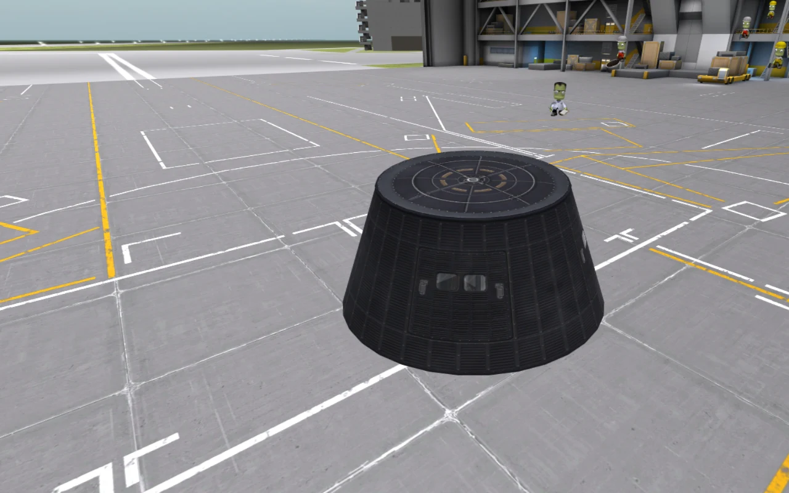

Gemini Big "G" Crew Compartment Rescue
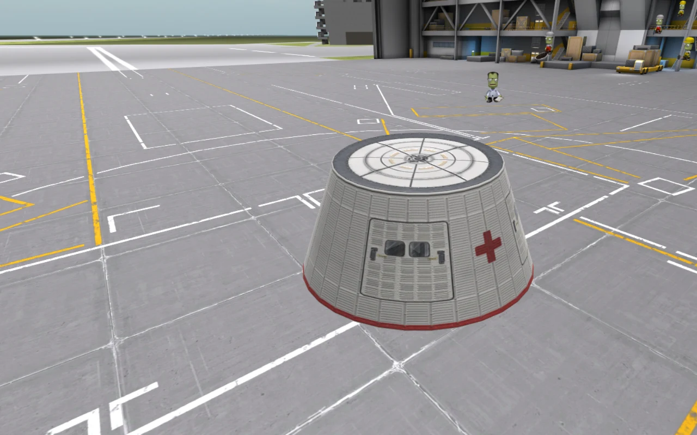

Gemini Command Pod
Gemini Lander Pod

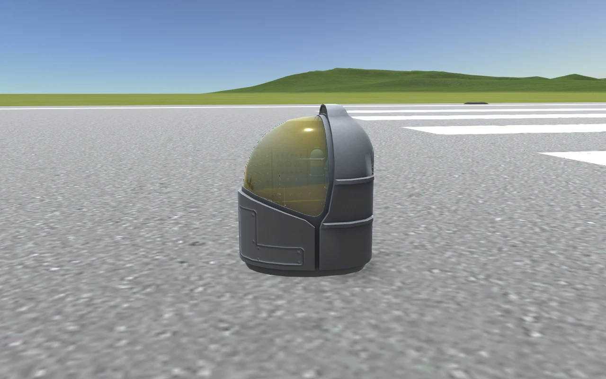
Gemini MOL Manned Orbital Laboratory Science Module
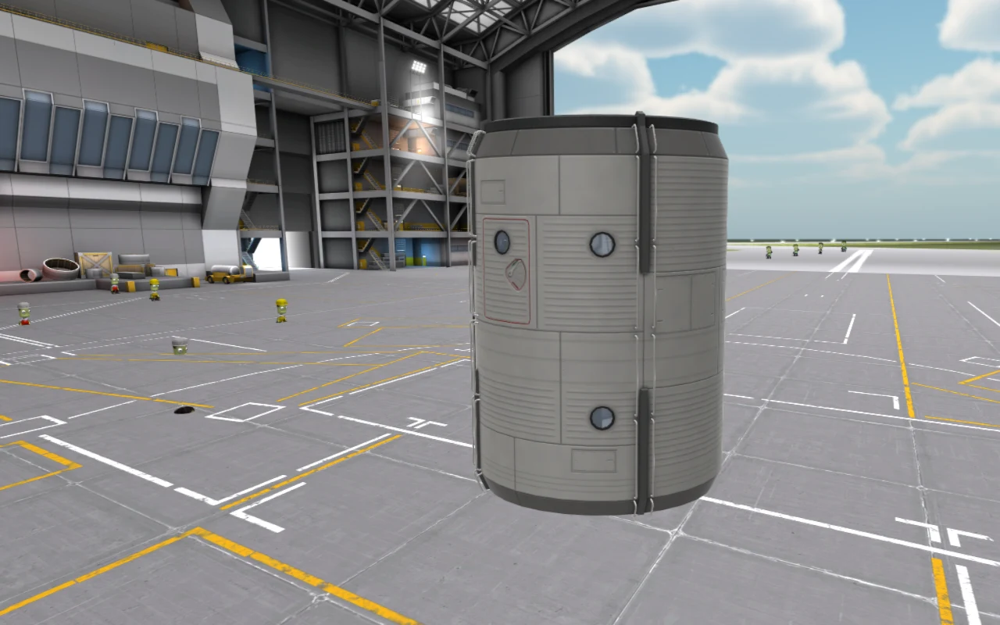

Gemini White Command Pod
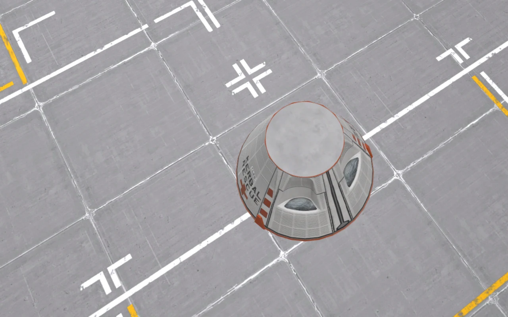

Mercury Command Pod
Mini Goo™ Radiometer
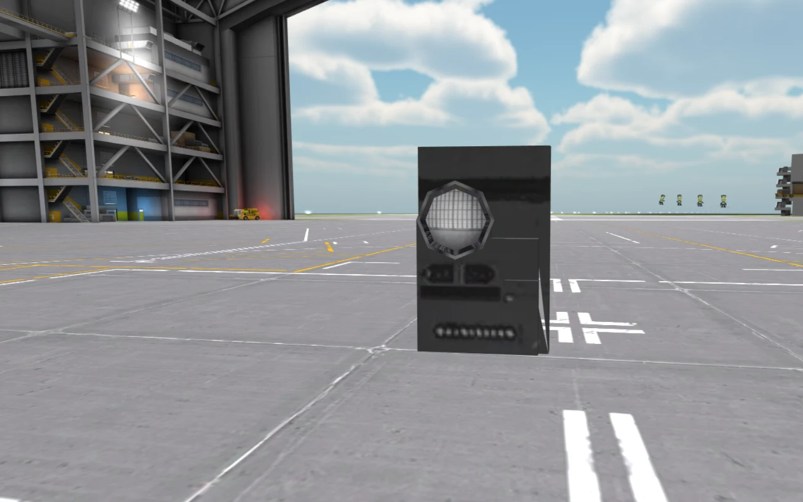

Pioneer Probe Core
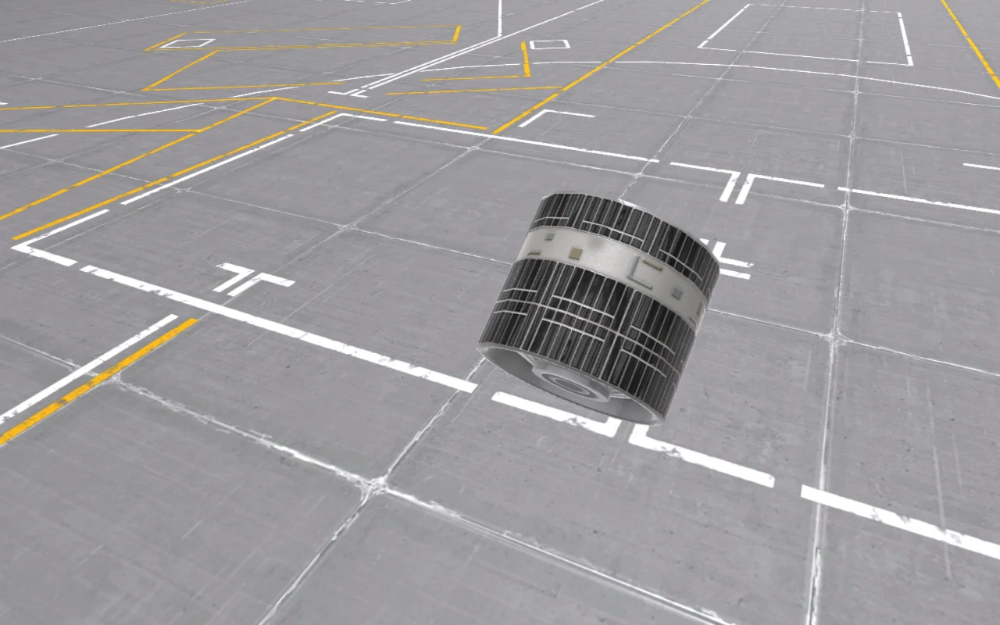
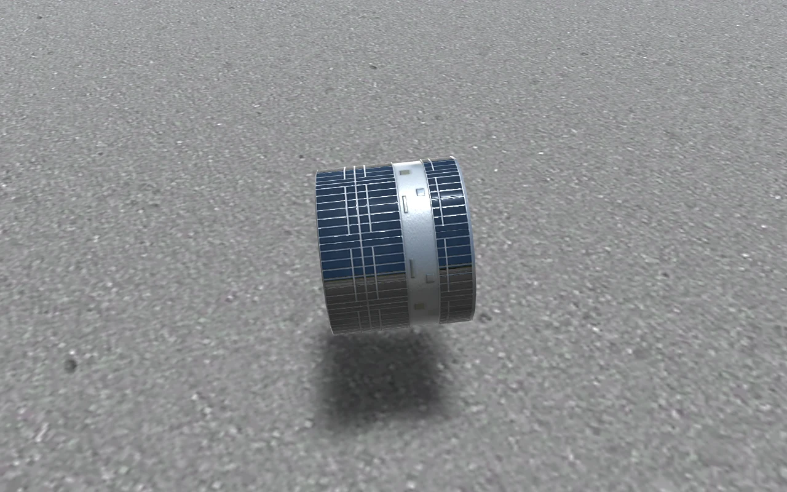
Solar Panel Mini

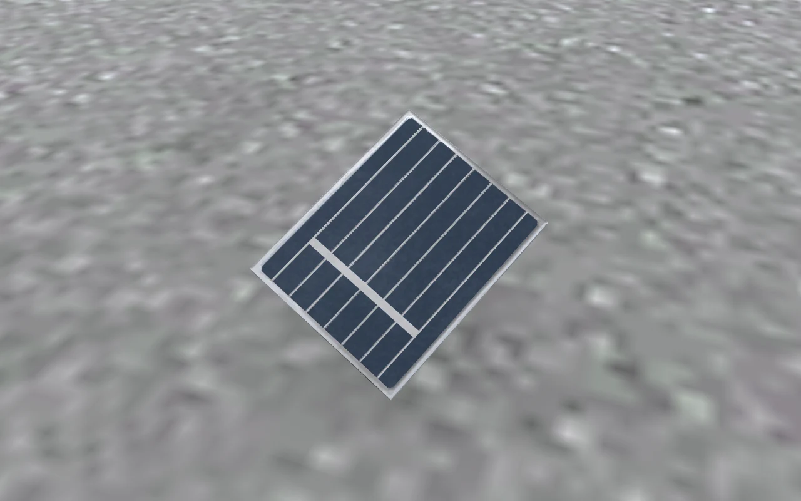
Station Solar Panel Large

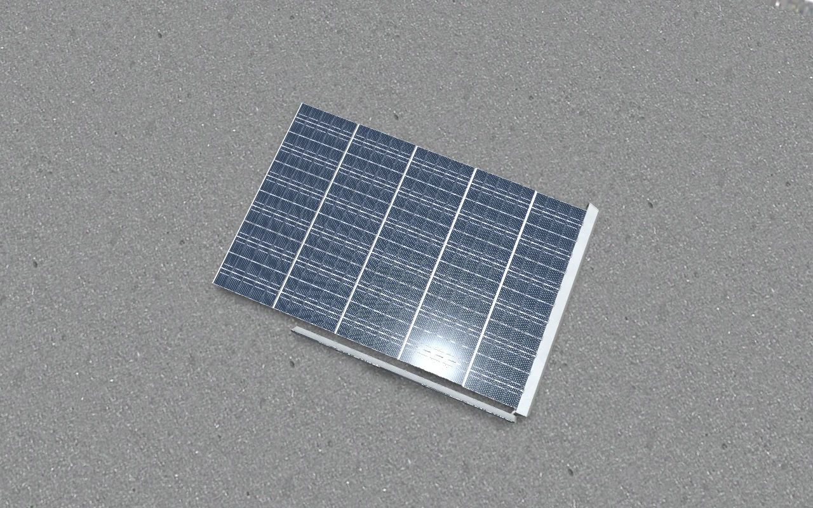
Station Solar Panel Medium
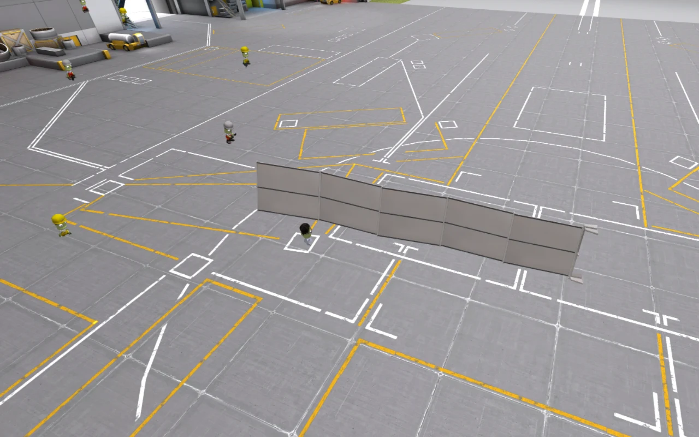
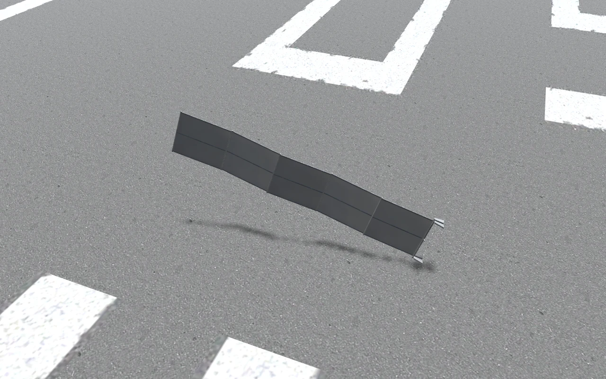